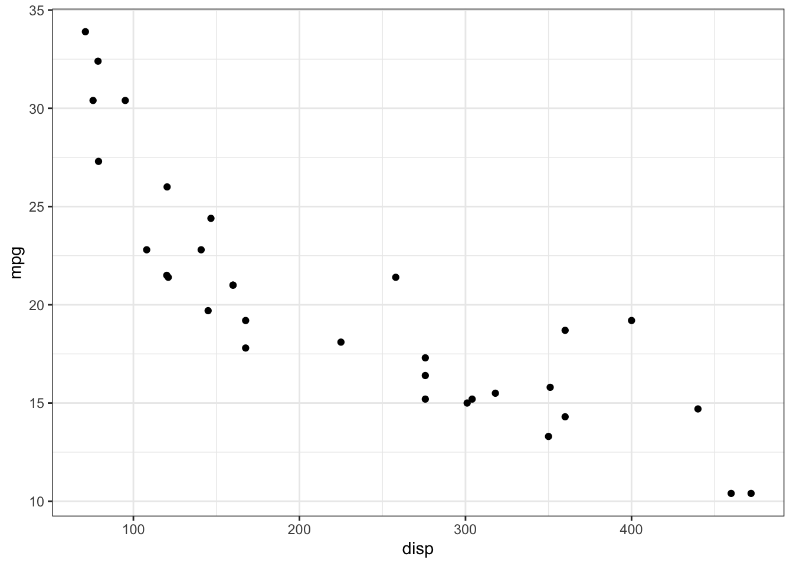
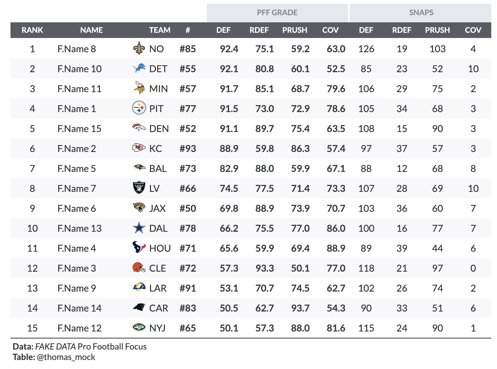
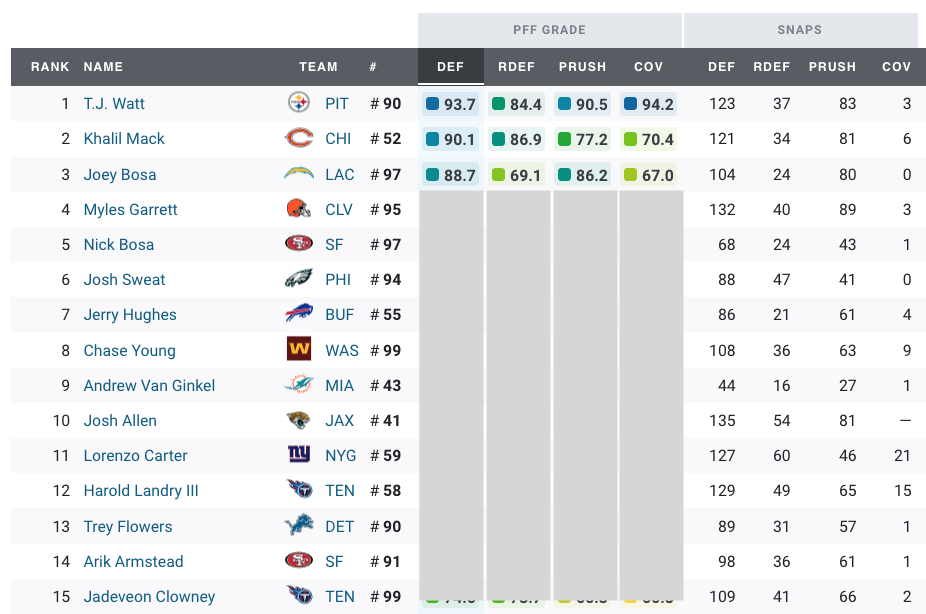
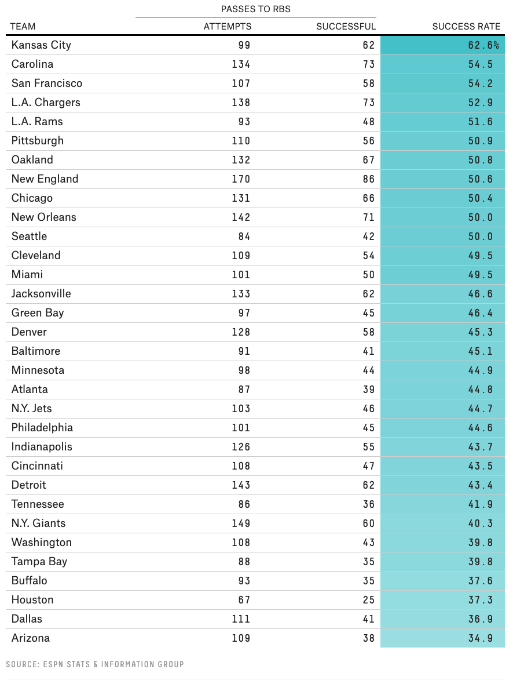

gt tables
I’m continuing my series on gt tables with an exploration of gt functions and themes. Technically, they could be treated as the same thing but slightly different use cases.
For a function - I would think of the gt table as the final output, whereas a theme is applied to an existing gt table.
If you’ve never written a function, I’d recommend reading the functions chapter from the R4DS book.
For an example, here’s a quick function with gt:
mtcars_table <- function(cyl_match = 6){
mtcars %>%
filter(cyl == cyl_match) %>%
head() %>%
gt() %>%
tab_header(
title = glue::glue("Table for cars with {cyl_match} cylinders")
)
}
mtcars_table(4)| Table for cars with 4 cylinders | ||||||||||
|---|---|---|---|---|---|---|---|---|---|---|
| mpg | cyl | disp | hp | drat | wt | qsec | vs | am | gear | carb |
| 22.8 | 4 | 108.0 | 93 | 3.85 | 2.320 | 18.61 | 1 | 1 | 4 | 1 |
| 24.4 | 4 | 146.7 | 62 | 3.69 | 3.190 | 20.00 | 1 | 0 | 4 | 2 |
| 22.8 | 4 | 140.8 | 95 | 3.92 | 3.150 | 22.90 | 1 | 0 | 4 | 2 |
| 32.4 | 4 | 78.7 | 66 | 4.08 | 2.200 | 19.47 | 1 | 1 | 4 | 1 |
| 30.4 | 4 | 75.7 | 52 | 4.93 | 1.615 | 18.52 | 1 | 1 | 4 | 2 |
| 33.9 | 4 | 71.1 | 65 | 4.22 | 1.835 | 19.90 | 1 | 1 | 4 | 1 |
In this case, we’re just using the table to generate our output of interest. Now something cool about gt since it’s pipe-oriented, is that you can continue working with the table. So let’s make some changes from our gt function.
mtcars_table(6) %>%
opt_all_caps() %>%
opt_align_table_header("left")| Table for cars with 6 cylinders | ||||||||||
|---|---|---|---|---|---|---|---|---|---|---|
| mpg | cyl | disp | hp | drat | wt | qsec | vs | am | gear | carb |
| 21.0 | 6 | 160.0 | 110 | 3.90 | 2.620 | 16.46 | 0 | 1 | 4 | 4 |
| 21.0 | 6 | 160.0 | 110 | 3.90 | 2.875 | 17.02 | 0 | 1 | 4 | 4 |
| 21.4 | 6 | 258.0 | 110 | 3.08 | 3.215 | 19.44 | 1 | 0 | 3 | 1 |
| 18.1 | 6 | 225.0 | 105 | 2.76 | 3.460 | 20.22 | 1 | 0 | 3 | 1 |
| 19.2 | 6 | 167.6 | 123 | 3.92 | 3.440 | 18.30 | 1 | 0 | 4 | 4 |
| 17.8 | 6 | 167.6 | 123 | 3.92 | 3.440 | 18.90 | 1 | 0 | 4 | 4 |
So our function can generate a gt table, and we can then apply any other changes we need to the existing table.
Since this is a toy example, it’s not very exciting, so let’s continue on!
Better Example
Let’s grab a quick example from my espnscrapeR package. Each week, QBs are given a QBR (Quarterback Rating) score from ESPN.
library(espnscrapeR)
get_nfl_qbr(season = 2020, week = 1)Scraping weekly QBR for week 1 of 2020!# A tibble: 32 × 30
season season_type game_id game_week week_text team_abb player_id name_short
<dbl> <chr> <chr> <int> <chr> <chr> <chr> <chr>
1 2020 Regular 4012201… 1 Week 1 BAL 3916387 L. Jackson
2 2020 Regular 4012203… 1 Week 1 GB 8439 A. Rodgers
3 2020 Regular 4012203… 1 Week 1 SEA 14881 R. Wilson
4 2020 Regular 4012202… 1 Week 1 KC 3139477 P. Mahomes
5 2020 Regular 4012203… 1 Week 1 ARI 3917315 K. Murray
6 2020 Regular 4012201… 1 Week 1 NE 13994 C. Newton
7 2020 Regular 4012203… 1 Week 1 DAL 2577417 D. Presco…
8 2020 Regular 4012201… 1 Week 1 JAX 4038524 G. Minshew
9 2020 Regular 4012202… 1 Week 1 TEN 14876 R. Tanneh…
10 2020 Regular 4012203… 1 Week 1 NO 2580 D. Brees
# … with 22 more rows, and 22 more variables: rank <dbl>, qbr_total <dbl>,
# pts_added <dbl>, qb_plays <dbl>, epa_total <dbl>, pass <dbl>, run <dbl>,
# exp_sack <dbl>, penalty <dbl>, qbr_raw <dbl>, sack <dbl>, name_first <chr>,
# name_last <chr>, name_display <chr>, headshot_href <chr>, team <chr>,
# opp_id <chr>, opp_abb <chr>, opp_team <chr>, opp_name <chr>,
# week_num <int>, qualified <lgl>Let’s use a function to generate a relatively clean table quickly. Our goal here is to take the process of collecting and cleaning data then generating a gt table into a simple function for the year + week of interest.
qbr_table(2020, 1)Scraping weekly QBR for week 1 of 2020!| Top 10 QBs for week 1 of 2020 | |||||||
|---|---|---|---|---|---|---|---|
| rk | team | name | qbr | plays | pass | run | sack |
| 1 | Ravens | L. Jackson | 93.2 | 34 | 7.9 | -0.6 | -0.4 |
| 2 | Packers | A. Rodgers | 91.4 | 48 | 9.9 | 0.7 | 0.0 |
| 3 | Seahawks | R. Wilson | 81.8 | 46 | 8.1 | -0.8 | -1.5 |
| 4 | Chiefs | P. Mahomes | 80.7 | 36 | 7.7 | 0.0 | -0.5 |
| 5 | Cardinals | K. Murray | 79.0 | 56 | 4.3 | 5.7 | -0.6 |
| 6 | Patriots | C. Newton | 77.6 | 35 | 2.9 | 4.0 | -1.2 |
| 7 | Cowboys | D. Prescott | 76.2 | 47 | 5.6 | 1.1 | -1.6 |
| 8 | Jaguars | G. Minshew | 70.3 | 29 | 4.7 | -0.3 | -2.2 |
| 9 | Titans | R. Tannehill | 70.0 | 51 | 8.5 | 0.0 | -0.1 |
| 10 | Saints | D. Brees | 68.5 | 36 | 3.6 | -0.4 | -0.7 |
qbr_table(2020, 3)Scraping weekly QBR for week 3 of 2020!| Top 10 QBs for week 3 of 2020 | |||||||
|---|---|---|---|---|---|---|---|
| rk | team | name | qbr | plays | pass | run | sack |
| 1 | Chiefs | P. Mahomes | 98.0 | 49 | 12.3 | 2.5 | 0.0 |
| 2 | Dolphins | R. Fitzpatrick | 95.8 | 31 | 5.9 | 2.1 | -0.1 |
| 3 | Packers | A. Rodgers | 89.4 | 38 | 6.0 | 1.9 | -0.7 |
| 4 | Bills | J. Allen | 87.0 | 44 | 9.5 | 0.5 | -2.3 |
| 5 | Colts | P. Rivers | 86.2 | 23 | 5.6 | 0.0 | 0.0 |
| 6 | Saints | D. Brees | 85.5 | 40 | 7.6 | 0.0 | -0.9 |
| 7 | Seahawks | R. Wilson | 83.4 | 54 | 11.9 | 0.1 | -1.6 |
| 8 | Texans | D. Watson | 81.4 | 34 | 5.2 | 0.1 | -2.3 |
| 9 | 49ers | N. Mullens | 78.0 | 42 | 6.3 | 0.1 | -0.9 |
| 10 | Cowboys | D. Prescott | 74.4 | 69 | 9.1 | 1.3 | -0.6 |
qbr_table <- function(season_in, week_in){
raw_df <- get_nfl_qbr(season = season_in, week = week_in)
raw_df %>%
slice(1:10) %>%
select(
rk = rank, team, name = name_short, qbr = qbr_total,
plays = qb_plays, pass, run, sack
) %>%
gt() %>%
opt_all_caps() %>%
tab_options(
table.width = px(600),
heading.title.font.weight = "bold",
heading.align = "left"
) %>%
tab_header(
title = glue::glue("Top 10 QBs for week {week_in} of {season_in}")
)
}
qbr_table(2020, 1)Boom! Ready to share an update on the top 10 QBs by QBR for week 1, or week 2 or week 3, or week 16 from 2015, or ANY other week/season combo! Putting this all into a function lets us simply focus on which data to input and generate a nice table.
Note you could still do a lot to this table to get it publication ready or specific to your “brand”, which gets us into the next part - themes!
gt Themes
We’re going to explore 3 different formats for elegant tables with examples from ESPN, ProFootball Focus, and FiveThirtyEight. Of the three, I personally think that FiveThirtyEight has some of the best minimalist tables on the web right now, but for the sake of different tastes we’ll go through each!
Before diving right into the themes - I’d first like to show a quick example of a theme and walk through the code. Hopefully this gives you enough to make your own themes down the line!
You can think of gt themes in a similar fashion to ggplot2 themes. Just as theme_bw() just changes the appearance (eg theme) of the plot, a custom-defined gt theme will affect the overall appearance of a gt table (although as a function you could make it do even more!).
mtcars %>%
ggplot(aes(x = disp, y = mpg)) +
geom_point() +
# Here is a built in theme for ggplot2
theme_bw()
Basic Theme
The core idea of a theme is that it’s a function that passes data and ..., where the data is actually a gt object, and the ... are a placeholder for user-defined expressions. The ... can also be called “dot-dot-dot”, “the dots” or “ellipsis”, and you can read more about them in the Tidy evaluation book. A quick quote about them from that book chapter:
The dot-dot-dot argument is one of the nicest aspects of the R language. A function that takes
...accepts any number of arguments, named or unnamed.
What this really means is that we are leaving any argument on the table for tab_options() which has the widest range of possible arguments in gt (> 100 possible arguments). You can see all the possible options in the gt reference.
Our basic example passes data as the first argument into tab_options() and leaves a ... inside tab_options().
basic_theme <- function(data, ...){
data %>%
tab_options(
table.background.color = "purple",
...
)
}If we use this theme, it will just change the table background color.
| mpg | cyl | disp | hp | drat | wt | qsec | vs | am | gear | carb |
|---|---|---|---|---|---|---|---|---|---|---|
| 21.0 | 6 | 160 | 110 | 3.90 | 2.620 | 16.46 | 0 | 1 | 4 | 4 |
| 21.0 | 6 | 160 | 110 | 3.90 | 2.875 | 17.02 | 0 | 1 | 4 | 4 |
| 22.8 | 4 | 108 | 93 | 3.85 | 2.320 | 18.61 | 1 | 1 | 4 | 1 |
| 21.4 | 6 | 258 | 110 | 3.08 | 3.215 | 19.44 | 1 | 0 | 3 | 1 |
| 18.7 | 8 | 360 | 175 | 3.15 | 3.440 | 17.02 | 0 | 0 | 3 | 2 |
| 18.1 | 6 | 225 | 105 | 2.76 | 3.460 | 20.22 | 1 | 0 | 3 | 1 |
However, since we left the ... inside our theme, we can pass additional arguments into the basic_theme(). Let’s change the column label background to red.
| mpg | cyl | disp | hp | drat | wt | qsec | vs | am | gear | carb |
|---|---|---|---|---|---|---|---|---|---|---|
| 21.0 | 6 | 160 | 110 | 3.90 | 2.620 | 16.46 | 0 | 1 | 4 | 4 |
| 21.0 | 6 | 160 | 110 | 3.90 | 2.875 | 17.02 | 0 | 1 | 4 | 4 |
| 22.8 | 4 | 108 | 93 | 3.85 | 2.320 | 18.61 | 1 | 1 | 4 | 1 |
| 21.4 | 6 | 258 | 110 | 3.08 | 3.215 | 19.44 | 1 | 0 | 3 | 1 |
| 18.7 | 8 | 360 | 175 | 3.15 | 3.440 | 17.02 | 0 | 0 | 3 | 2 |
| 18.1 | 6 | 225 | 105 | 2.76 | 3.460 | 20.22 | 1 | 0 | 3 | 1 |
As a final note, you can keep piping the results into further gt arguments!
mtcars %>%
head() %>%
gt() %>%
basic_theme(
column_labels.background.color = "red",
table.font.size = px(12),
column_labels.font.size = px(20),
row.striping.background_color = "#9678b6",
heading.align = "left",
heading.title.font.size = px(30)
) %>%
opt_row_striping() %>%
tab_header(title = "Important table with theme")| Important table with theme | ||||||||||
|---|---|---|---|---|---|---|---|---|---|---|
| mpg | cyl | disp | hp | drat | wt | qsec | vs | am | gear | carb |
| 21.0 | 6 | 160 | 110 | 3.90 | 2.620 | 16.46 | 0 | 1 | 4 | 4 |
| 21.0 | 6 | 160 | 110 | 3.90 | 2.875 | 17.02 | 0 | 1 | 4 | 4 |
| 22.8 | 4 | 108 | 93 | 3.85 | 2.320 | 18.61 | 1 | 1 | 4 | 1 |
| 21.4 | 6 | 258 | 110 | 3.08 | 3.215 | 19.44 | 1 | 0 | 3 | 1 |
| 18.7 | 8 | 360 | 175 | 3.15 | 3.440 | 17.02 | 0 | 0 | 3 | 2 |
| 18.1 | 6 | 225 | 105 | 2.76 | 3.460 | 20.22 | 1 | 0 | 3 | 1 |
NOTE: While I’ve passed multiple arguments to our theme function as a show of possibility, the goal here is to push as much as the default theme elements you want to change into our theme function ahead of time to save repetitive typing!
Enough of fun but toy examples - let’s dive into the real themes!
ESPN
Our ESPN table is again using the original QBR data, and they are clean and simple. All caps on the column labels, row striping, but also add the player’s team as smaller gray text after the player’s name. Note that they also use hyperlinks to the player page (I’ll just focus on showing an example of blue text). Lastly, ESPN also uses interactive tables so there is a highlighted column for sorting. I’ll cover reactable themes on a later date so for now we’ll focus on static HTML with gt.


espn_qbr <- espnscrapeR::get_nfl_qbr(2020) %>%
select(
rk = rank, team, name, qbr = qbr_total, paa = points_added, plays = qb_plays,
epa = total_epa, pass, run, sack, pen = penalty, raw = raw_qbr
)
espn_qbr %>%
mutate(name = paste0(
"<span style='font-size:16px; color:royalblue;'>",
name,
"</span>",
" <span style='font-size:12px; color:grey;'>",
word(team, start = -1), "</span>"),
name = map(name, ~gt::html(as.character(.x)))
) %>%
select(-team) %>%
slice(1:15) %>%
gt() %>%
tab_header(title = md("**NFL Total QBR - 2020 Season Leaders**")) %>%
gt_theme_espn() %>%
cols_align("left", columns = vars(name)) %>%
tab_source_note(md("**Data:** ESPN<br>**Table:** @thomas_mock"))gt_theme_espn <- function(data, ...){
data %>%
opt_all_caps() %>%
opt_table_font(
font = list(
google_font("Lato"),
default_fonts()
)
) %>%
opt_row_striping() %>%
tab_options(
row.striping.background_color = "#fafafa",
table_body.hlines.color = "#f6f7f7",
source_notes.font.size = 12,
table.font.size = 16,
table.width = px(700),
heading.align = "left",
heading.title.font.size = 24,
table.border.top.color = "transparent",
table.border.top.width = px(3),
data_row.padding = px(7),
...
)
}PFF
The data for this example is FAKE example data for some edge defenders. Quick example gt of this data below.
Getting NFL teams!Joining, by = "team"| rank | name | team | number | def | rdef | prush |
|---|---|---|---|---|---|---|
| 1 | F.Name 8 | NO | 85 | 92.4 | 75.1 | 59.2 |
| 2 | F.Name 10 | DET | 55 | 92.1 | 80.8 | 60.1 |
| 3 | F.Name 11 | MIN | 57 | 91.7 | 85.1 | 68.7 |
| 4 | F.Name 1 | PIT | 77 | 91.5 | 73.0 | 72.9 |
| 5 | F.Name 15 | DEN | 52 | 91.1 | 89.7 | 75.4 |
| 6 | F.Name 2 | KC | 93 | 88.9 | 59.8 | 86.3 |
# Get the team logos
team_df <- espnscrapeR::get_nfl_teams() %>%
select(team = team_abb, logo)
n_play <- 15
# set seed for reproducibility
set.seed(2020)
# generate fake data
fake_df <- tibble(
rank = c(1:n_play),
name = paste0("F.Name ", 1:n_play),
team = c(
"PIT", "KC", "CLE", "HOU", "BAL", "JAX", "LV", "NO",
"LAR", "DET", "MIN", "NYJ", "DAL", "CAR", "DEN"),
number = sample(50:99, size = n_play),
def = runif(n_play, min = 50.0, 94.0),
rdef = runif(n_play, min = 50.0, 94.0),
prush = runif(n_play, min = 50.0, 94.0),
cov = runif(n_play, min = 50.0, 94.0),
def_snaps = sample(85:130, size = n_play),
rdef_snaps = sample(12:40, size = n_play),
prush_snaps = NA,
cov_snaps = sample(0:10, size = n_play, replace = TRUE)
) %>%
mutate(
prush_snaps = def_snaps - rdef_snaps - cov_snaps
) %>%
left_join(team_df) %>%
select(rank:name, logo, everything()) %>%
arrange(desc(def)) %>%
mutate(rank = row_number())
fake_df %>%
select(1:8, -logo) %>%
head() %>%
gt() %>%
fmt_number(
columns = 5:7,
decimals = 1
)Now, that’s an ok table, but we can do a lot better with a theme, especially one to relatively match the theme PFF uses! Example from their Position Grade data.
There’s a few things of interest we want to do to:
- Row striping without horizontal lines
- Dark gray column labels background (but light gray for spanners) and all caps labels
- Team logos
- Bold text for PFF grade, but normal weights for snap counts
Warning: `columns = vars(...)` has been deprecated in gt 0.3.0:
* please use `columns = c(...)` instead
Warning: `columns = vars(...)` has been deprecated in gt 0.3.0:
* please use `columns = c(...)` instead
Warning: `columns = vars(...)` has been deprecated in gt 0.3.0:
* please use `columns = c(...)` insteadWarning: `columns = TRUE` has been deprecated in gt 0.3.0:
* please use `columns = everything()` instead

fake_df %>%
gt() %>%
fmt_number(
columns = 6:9,
decimals = 1
) %>%
gt_theme_pff()gt_theme_pff <- function(data, ...) {
data %>%
# Add team logos w/ web_image
text_transform(
locations = cells_body(
vars(logo)
),
fn = function(x) {
web_image(
url = x,
height = 25
)
}
) %>%
# add spanner for PFF Grade
tab_spanner(
label = "PFF GRADE",
columns = vars(def, rdef, prush, cov)
) %>%
# add spanner for SNAPS
tab_spanner(
label = "SNAPS",
columns = contains("snaps")
) %>%
# Add a "blank" spanner to add white space
tab_spanner(
label = "BLANK",
columns = 1:5
) %>%
# Relabel columns
cols_label(
def_snaps = "DEF",
rdef_snaps = "RDEF",
prush_snaps = "PRUSH",
cov_snaps = "COV",
number = "#",
logo = ""
) %>%
# if missing, replace NA w/ ---
fmt_missing(
columns = everything(),
missing_text = "---"
) %>%
# add exact color from PFF table to spanners
tab_style(
style = list(
cell_fill(color = "#e4e8ed"),
cell_text(color = "#878e94"),
cell_borders(sides = "left", color = "white", weight = px(3))
),
locations = list(
cells_column_spanners(
spanners = c("PFF GRADE", "SNAPS")
)
)
) %>%
# hide spanner with transparent color
tab_style(
style = list(
cell_fill(color = "transparent"),
cell_text(color = "transparent")
),
locations = list(
cells_column_spanners(
spanners = c("BLANK")
)
)
) %>%
# Change font color and weight for numeric col
tab_style(
style = list(
cell_text(color = "#3a3d42", weight = "bold")
),
locations = cells_body(
columns = 5:9
)
) %>%
# Add pound sign in front of numbers
text_transform(
locations = cells_body(
columns = vars(number)
),
fn = function(x) {
paste0("#", x)
}
) %>%
# Make column labels and spanners all caps
opt_all_caps() %>%
# add row striping
opt_row_striping() %>%
# change overall table styling for borders and striping
tab_options(
column_labels.background.color = "#585d63",
table_body.hlines.color = "transparent",
table.border.top.width = px(3),
table.border.top.color = "transparent",
table.border.bottom.color = "transparent",
table.border.bottom.width = px(3),
column_labels.border.top.width = px(3),
column_labels.border.top.color = "transparent",
column_labels.border.bottom.width = px(3),
column_labels.border.bottom.color = "transparent",
row.striping.background_color = "#f9f9fb",
data_row.padding = px(3),
...
) %>%
cols_width(
1 ~ px(75),
2 ~ px(125),
3 ~ px(30),
4 ~ px(40),
everything() ~ px(60)
) %>%
# change color of border separating the text from the sourcenote
tab_style(
style = cell_borders(
sides = "bottom", color = "#585d63", weight = px(2)
),
locations = cells_body(
columns = TRUE,
rows = nrow(data$`_data`)
)
) %>%
# change font to Lato throughout (note no need to have Lato locally!)
opt_table_font(
font = c(
google_font(name = "Lato"),
default_fonts()
)
) %>%
# add source note
tab_source_note(
source_note = md("**Data:** _FAKE DATA_ Pro Football Focus<br>**Table:** @thomas_mock")
)
}While this theme is great, it’s very tailored to this specific data, so it’s closer to a function to generate PFF defensive grade tables. This is fine, as it would greatly speed up the ability to generate these for sharing somewhere, but it’s not a very generic function that could be used for novel data structures. This is mainly as we are doing some sneaky things to get the grey boxes around PFF GRADE and SNAPS that involve transparent backgrounds at specific locations. You could adapt big chunks of this code to use elsewhere though, and note that it would still work for CBs, LBs, Edge, DL, and Safeties. That’s pretty useful!
FiveThirtyEight
Now, since FiveThirtyEight tables are more minimal, the theme we’ll use for those tables can be essentially be extended to almost any table! The original data and table come from a FiveThirtyEight article from 2018.


library(rvest)
url <- "https://fivethirtyeight.com/features/sorry-running-backs-even-your-receiving-value-can-be-easily-replaced/"
rb_receiving <- url %>%
xml2::read_html() %>%
rvest::html_table() %>%
purrr::chuck(1) %>%
purrr::set_names(nm = c("team", "attempts", "successful", "success_rate")) %>%
dplyr::as_tibble() %>%
filter(team != "team") %>%
mutate(success_rate = stringr::str_remove(success_rate, "%")) %>%
mutate(across(c(attempts:success_rate), as.double))tab_538 <- rb_receiving %>%
gt() %>%
tab_spanner(
label = "PASSES TO RBS",
columns = vars(attempts, successful)
) %>%
data_color(
columns = vars(success_rate),
colors = scales::col_numeric(
palette = c("white", "#3fc1c9"),
domain = NULL
)
) %>%
cols_label(
success_rate = "SUCCESS RATE (%)"
) %>%
tab_source_note(
source_note = md("SOURCE: ESPN STATS & INFORMATION GROUP<br>TABLE: @THOMAS_MOCK")
) %>%
gt_theme_538(table.width = px(550))Here’s the theme code for the FiveThirtyEight theme.
gt_theme_538 <- function(data,...) {
data %>%
opt_all_caps() %>%
opt_table_font(
font = list(
google_font("Chivo"),
default_fonts()
)
) %>%
tab_style(
style = cell_borders(
sides = "bottom", color = "transparent", weight = px(2)
),
locations = cells_body(
columns = TRUE,
# This is a relatively sneaky way of changing the bottom border
# Regardless of data size
rows = nrow(data$`_data`)
)
) %>%
tab_options(
column_labels.background.color = "white",
table.border.top.width = px(3),
table.border.top.color = "transparent",
table.border.bottom.color = "transparent",
table.border.bottom.width = px(3),
column_labels.border.top.width = px(3),
column_labels.border.top.color = "transparent",
column_labels.border.bottom.width = px(3),
column_labels.border.bottom.color = "black",
data_row.padding = px(3),
source_notes.font.size = 12,
table.font.size = 16,
heading.align = "left",
...
)
}Now, since that data is public via nflfastR, we could try and recreate that table for 2018 or 2019 (or really any year between 1999 and 2020). There’s a small amount of difference between what FiveThirtyEight reported and what we calculated with nflfastR data, but perhaps they excluded some other plays (or excluded FBs). Feel free to dive in a bit deeper if you’re interested in recreating (all the code is included below).


# 2018 recreation
season_stats %>%
filter(season == 2018) %>%
select(-season) %>%
gt() %>%
tab_spanner(
label = "PASSES TO RBS",
columns = vars(Attempts, Successful)
) %>%
tab_header(
title = md("**The Chiefs got the most out of the running back pass**"),
subtitle = md("NFL teams by success rate of passes to running backs, as measured by positive<br>expected points added, for the 2018 regular season")
) %>%
data_color(
columns = vars(success_rate),
colors = scales::col_numeric(
palette = c("white", "#3fc1c9"),
domain = NULL
)
) %>%
cols_label(
success_rate = "SUCCESS RATE (%)"
) %>%
tab_source_note(
source_note = md("SOURCE: NFLFASTR<br>TABLE: @THOMAS_MOCK")
) %>%
gt_theme_538(table.width = px(550))
# 2019 table
season_stats %>%
filter(season == 2019) %>%
select(-season) %>%
gt() %>%
tab_header(
title = md("**The Panthers got the most out of the running back pass**"),
subtitle = md("NFL teams by success rate of passes to running backs, as measured by positive<br>expected points added, for the 2019 regular season")
) %>%
tab_spanner(
label = "PASSES TO RBS",
columns = vars(Attempts, Successful)
) %>%
data_color(
columns = vars(success_rate),
colors = scales::col_numeric(
palette = c("white", "#3fc1c9"),
domain = NULL
)
) %>%
cols_label(
success_rate = "SUCCESS RATE (%)"
) %>%
tab_source_note(
source_note = md("SOURCE: NFLFASTR<br>TABLE: @THOMAS_MOCK")
) %>%
gt_theme_538(table.width = px(550))rosters <- read_csv("https://raw.githubusercontent.com/guga31bb/nflfastR-data/master/roster-data/roster.csv") %>%
filter(teamPlayers.position %in% c("QB", "WR", "RB", "FB", "TE"), team.season %in% c(2018, 2019)) %>%
select(
position = teamPlayers.position, receiver_jersey_number = teamPlayers.jerseyNumber,
posteam = team.abbr, season = team.season
)
seasons <- 2018:2019
pbp <- purrr::map_df(seasons, function(x) {
readr::read_csv(
glue::glue("https://raw.githubusercontent.com/guga31bb/nflfastR-data/master/data/play_by_play_{x}.csv.gz")
)
})
data_clean <- pbp %>%
filter(pass == 1 & sack == 0 & qb_scramble == 0, !is.na(receiver_jersey_number)) %>%
filter(week <= 17) %>%
select(
season, name, pass, desc, posteam, epa, defteam, complete_pass, incomplete_pass,
air_yards, receiver_player_name, receiver_jersey_number, down, success, complete_pass
) %>%
left_join(rosters, by = c("receiver_jersey_number", "posteam", "season")) %>%
filter(!is.na(position)) %>%
mutate(position = if_else(position == "FB", "RB", position))
pos <- data_clean %>%
filter(position == "RB")
season_stats <- pos %>%
filter(!is.na(success)) %>%
select(posteam, success, season) %>%
group_by(season) %>%
add_count(posteam) %>%
count(posteam, success) %>%
mutate(success = if_else(success == 0, "Attempts", "Successful")) %>%
pivot_wider(names_from = success, values_from = n) %>%
mutate(
Attempts = Successful + Attempts,
success_rate = Successful/Attempts,
success_rate = round(success_rate, digits = 3) * 100
) %>%
arrange(desc(success_rate)) %>%
ungroup()Last example - remember that our ESPN or FiveThirtyEight themes can be applied to novel data structures, while the PFF theme made additional changes for gt that were specific to at least the same columns we expect.
mtcars %>%
slice(1:10) %>%
gt() %>%
gt_theme_538() %>%
tab_header(title = md("**FiveThirtyEight Style**"))
mtcars %>%
slice(1:10) %>%
gt() %>%
gt_theme_espn() %>%
tab_header(title = md("**ESPN Style**"))
─ Session info ───────────────────────────────────────────────────────────────
setting value
version R version 4.2.0 (2022-04-22)
os macOS Monterey 12.2.1
system aarch64, darwin20
ui X11
language (EN)
collate en_US.UTF-8
ctype en_US.UTF-8
tz America/Chicago
date 2022-04-28
pandoc 2.18 @ /Applications/RStudio.app/Contents/MacOS/quarto/bin/tools/ (via rmarkdown)
quarto 0.9.294 @ /usr/local/bin/quarto
─ Packages ───────────────────────────────────────────────────────────────────
package * version date (UTC) lib source
dplyr * 1.0.8 2022-02-08 [1] CRAN (R 4.2.0)
espnscrapeR * 0.6.5 2022-04-26 [1] Github (jthomasmock/espnscrapeR@084ce80)
forcats * 0.5.1 2021-01-27 [1] CRAN (R 4.2.0)
ggplot2 * 3.3.5 2021-06-25 [1] CRAN (R 4.2.0)
gt * 0.5.0.9000 2022-04-27 [1] Github (rstudio/gt@0d4c83d)
purrr * 0.3.4 2020-04-17 [1] CRAN (R 4.2.0)
readr * 2.1.2 2022-01-30 [1] CRAN (R 4.2.0)
sessioninfo * 1.2.2 2021-12-06 [1] CRAN (R 4.2.0)
stringr * 1.4.0 2019-02-10 [1] CRAN (R 4.2.0)
tibble * 3.1.6 2021-11-07 [1] CRAN (R 4.2.0)
tidyr * 1.2.0 2022-02-01 [1] CRAN (R 4.2.0)
tidyverse * 1.3.1 2021-04-15 [1] CRAN (R 4.2.0)
[1] /Library/Frameworks/R.framework/Versions/4.2-arm64/Resources/library
──────────────────────────────────────────────────────────────────────────────